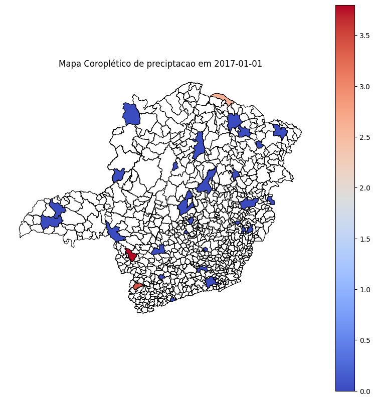
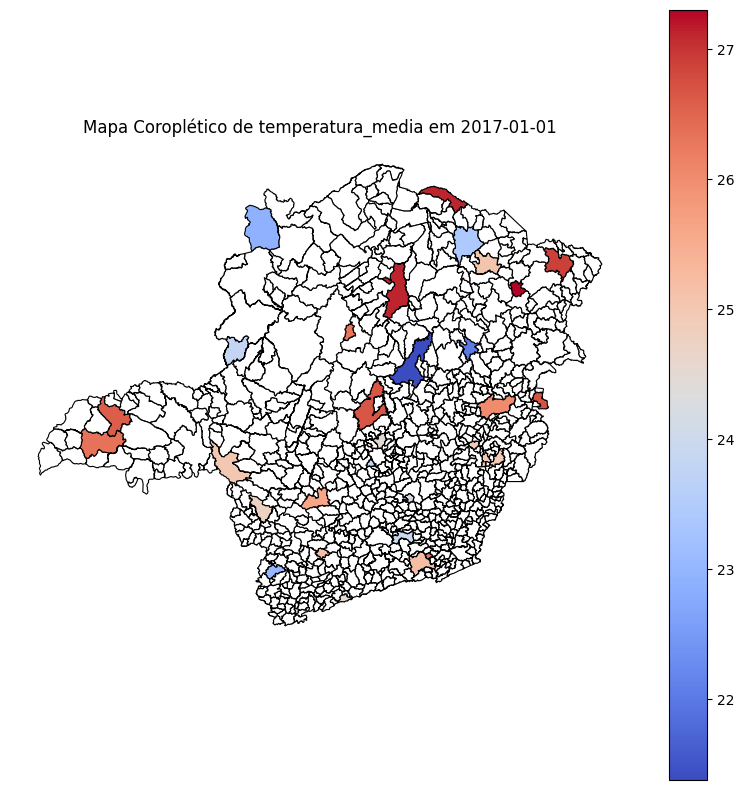
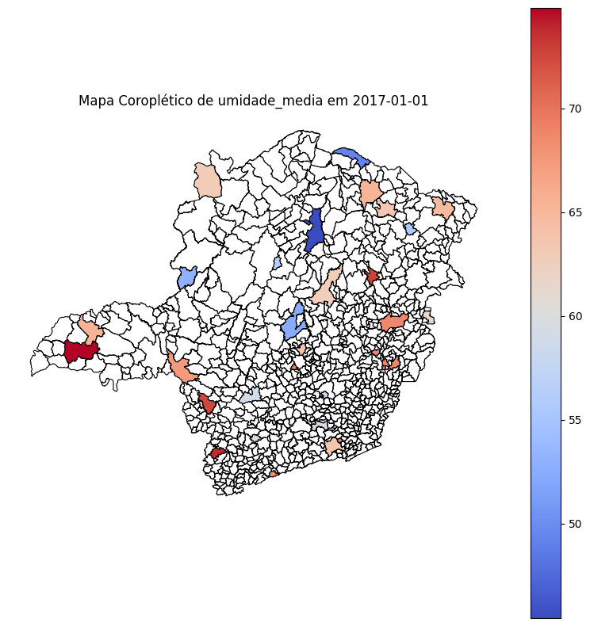
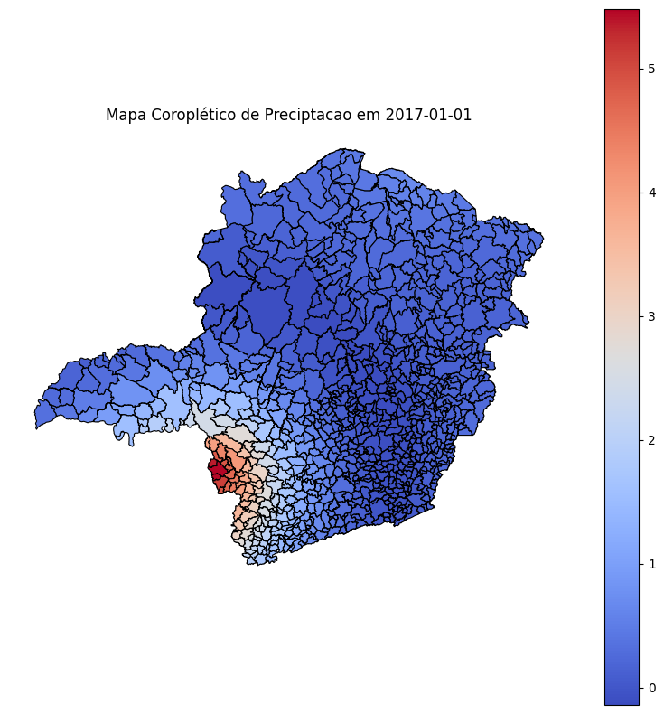
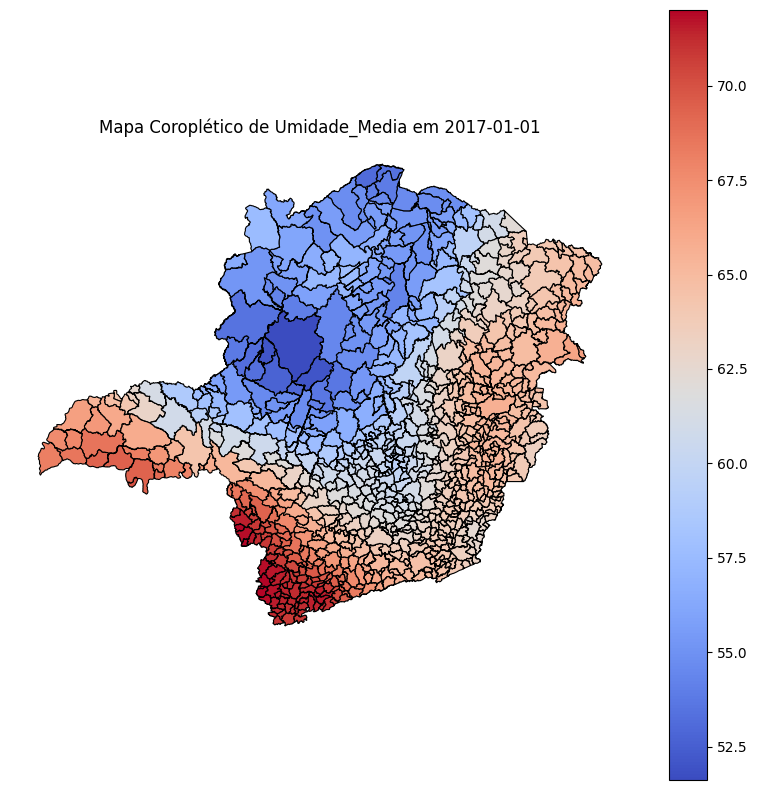

Krigagem de temperatura, umidade e preciptação para todos os municípios de Minas Gerais no período de 2016 a 2018
O objetivo deste script é demonstrar o uso de krigagem oridinária em python usando o pacote pykrige. Os dados foram preparados previamente usando as informações coletadas pelas estações automáticas do INMET distribuídas por Minas Gerais. Assim, a krigagem nada mais é do que a interpolação espacial dos dados coletados pontualmente de forma a a ter os dados climáticos de todos os municípios mineiros.
import pandas as pdimport numpy as npimport geopandas as gpdimport geoplot.crs as gcrsimport geoplot as gpltimport matplotlib.pyplot as pltfrom pykrige.ok import OrdinaryKriging
Upload e tratamento das bases
# Utilizando a malha de municipios mais recente do IBGE para MGurl_malha ="https://geoftp.ibge.gov.br/organizacao_do_territorio/malhas_territoriais/malhas_municipais/municipio_2022/UFs/MG/MG_Municipios_2022.zip"!wget -O MG_Municipios_2023.zip $url_malha
--2025-02-28 17:12:57-- https://geoftp.ibge.gov.br/organizacao_do_territorio/malhas_territoriais/malhas_municipais/municipio_2022/UFs/MG/MG_Municipios_2022.zip
Resolving geoftp.ibge.gov.br (geoftp.ibge.gov.br)... 191.233.136.86
Connecting to geoftp.ibge.gov.br (geoftp.ibge.gov.br)|191.233.136.86|:443... connected.
HTTP request sent, awaiting response... 200 OK
Length: 33017561 (31M) [application/zip]
Saving to: ‘MG_Municipios_2023.zip’
MG_Municipios_2023. 100%[===================>] 31.49M 12.7MB/s in 2.5s
2025-02-28 17:13:00 (12.7 MB/s) - ‘MG_Municipios_2023.zip’ saved [33017561/33017561]
!unzip MG_Municipios_2023.zip-d "MG_Municipios_2023"# Descompactando a pasta com a malha municipal
# Utilizando os dados das estações previamente tratadosurl_estacoes ="https://github.com/SofAguiar/krigagem_clima/raw/main/estacoes_mg.zip"!wget -O estacoes_mg.zip $url_estacoes
# Convertendo as colunas de data e variáveis para os tipos adequadosdf_estacoes['Data'] = pd.to_datetime(df_estacoes['Data'], errors='coerce')df_estacoes['temperatura_media'] = pd.to_numeric(df_estacoes['temperatura_media'], errors='coerce')df_estacoes['preciptacao'] = pd.to_numeric(df_estacoes['preciptacao'], errors='coerce')df_estacoes['umidade_media'] = pd.to_numeric(df_estacoes['umidade_media'], errors='coerce')df_estacoes['VL_LATITUDE'] = pd.to_numeric(df_estacoes['VL_LATITUDE'], errors='coerce')df_estacoes['VL_LONGITUDE'] = pd.to_numeric(df_estacoes['VL_LONGITUDE'], errors='coerce')df_estacoes['NM_MUN'] = df_estacoes['cidade'].str.lower().str.strip()municipios['NM_MUN'] = municipios['NM_MUN'].str.lower().str.strip()
# Garantindo que o CRS seja WGS84 (EPSG:4326)municipios = municipios.to_crs(epsg=4326)# Calculando os centróides dos municípios para usá-los como pontos de interpolaçãomunicipios['centroide'] = municipios.geometry.centroidmunicipios['lon'] = municipios['centroide'].xmunicipios['lat'] = municipios['centroide'].y
UserWarning: Geometry is in a geographic CRS. Results from 'centroid' are likely incorrect. Use 'GeoSeries.to_crs()' to re-project geometries to a projected CRS before this operation.
municipios['centroide'] = municipios.geometry.centroid
Conferência e visualização da base
df_dia = df_estacoes[df_estacoes['Data'] == np.datetime64('2016-01-01')]print("Registros com temperatura:", df_dia['temperatura_media'].dropna().shape[0])print("Registros com precipitação:", df_dia['preciptacao'].dropna().shape[0])print("Registros com umidade:", df_dia['umidade_media'].dropna().shape[0])
Registros com temperatura: 53
Registros com precipitação: 56
Registros com umidade: 53
df_dia = df_estacoes[df_estacoes['Data'] == np.datetime64('2018-12-31')]print("Registros com temperatura:", df_dia['temperatura_media'].dropna().shape[0])print("Registros com precipitação:", df_dia['preciptacao'].dropna().shape[0])print("Registros com umidade:", df_dia['umidade_media'].dropna().shape[0])
Registros com temperatura: 66
Registros com precipitação: 67
Registros com umidade: 66
df_estacoes.head()
Unnamed: 0
codigo
cidade
Data
preciptacao
pressao_atmosferica_media
temperatura_max
temperatura_min
temperatura_media
umidade_maxima
umidade_minima
umidade_media
VL_LATITUDE
VL_LONGITUDE
NM_MUN
0
1
A502
BARBACENA
2016-01-01
7.4
885.575000
30.3
18.5
23.241667
92.0
43.0
73.708333
-21.228333
-43.767778
barbacena
1
2
A502
BARBACENA
2016-01-02
8.6
885.975000
25.4
19.2
20.641667
94.0
72.0
88.916667
-21.228333
-43.767778
barbacena
2
3
A502
BARBACENA
2016-01-03
18.8
885.637500
25.6
18.2
20.366667
95.0
65.0
87.541667
-21.228333
-43.767778
barbacena
3
4
A502
BARBACENA
2016-01-04
24.0
887.458333
22.6
16.6
18.745833
95.0
68.0
87.333333
-21.228333
-43.767778
barbacena
4
5
A502
BARBACENA
2016-01-05
0.2
888.895833
24.3
13.6
18.375000
94.0
55.0
75.666667
-21.228333
-43.767778
barbacena
variavel_climatica ="preciptacao"# Uma variável de cada vezdata_especifica ="2017-01-01"# Defina a data desejada# Filtrar os dados para a data específicadf_estacoes_filtrado = df_estacoes[df_estacoes['Data'] == data_especifica].copy()# Selecionar apenas colunas necessárias para evitar duplicação de colunas no mergecolunas_relevantes = ['NM_MUN', variavel_climatica]df_estacoes_filtrado = df_estacoes_filtrado[colunas_relevantes]# Unir os dados climáticos ao GeoDataFrame de municípiosmunicipios_filtrado = municipios.merge(df_estacoes_filtrado, on='NM_MUN', how='left', suffixes=('', '_estacao'))# Criar a figurafig, ax = plt.subplots(1, 1, figsize=(10, 10))# Mapa coropléticomunicipios_filtrado.plot(column=variavel_climatica, cmap='coolwarm', linewidth=0.8, edgecolor='black', legend=True, ax=ax, missing_kwds={"color": "white", "label": "Sem dados"})# Ajustar título e remover eixosax.set_title(f"Mapa Coroplético de {variavel_climatica} em {data_especifica}", fontsize=12)ax.set_axis_off()# Exibir o mapaplt.show()

variavel_climatica ="temperatura_media"# Uma variável de cada vezdata_especifica ="2017-01-01"# Defina a data desejada# Filtrar os dados para a data específicadf_estacoes_filtrado = df_estacoes[df_estacoes['Data'] == data_especifica].copy()# Selecionar apenas colunas necessárias para evitar duplicação de colunas no mergecolunas_relevantes = ['NM_MUN', variavel_climatica]df_estacoes_filtrado = df_estacoes_filtrado[colunas_relevantes]# Unir os dados climáticos ao GeoDataFrame de municípiosmunicipios_filtrado = municipios.merge(df_estacoes_filtrado, on='NM_MUN', how='left', suffixes=('', '_estacao'))# Criar a figurafig, ax = plt.subplots(1, 1, figsize=(10, 10))# Mapa coropléticomunicipios_filtrado.plot(column=variavel_climatica, cmap='coolwarm', linewidth=0.8, edgecolor='black', legend=True, ax=ax, missing_kwds={"color": "white", "label": "Sem dados"})# Ajustar título e remover eixosax.set_title(f"Mapa Coroplético de {variavel_climatica} em {data_especifica}", fontsize=12)ax.set_axis_off()# Exibir o mapaplt.show()

variavel_climatica ="umidade_media"# Uma variável de cada vezdata_especifica ="2017-01-01"# Defina a data desejada# Filtrar os dados para a data específicadf_estacoes_filtrado = df_estacoes[df_estacoes['Data'] == data_especifica].copy()# Selecionar apenas colunas necessárias para evitar duplicação de colunas no mergecolunas_relevantes = ['NM_MUN', variavel_climatica]df_estacoes_filtrado = df_estacoes_filtrado[colunas_relevantes]# Unir os dados climáticos ao GeoDataFrame de municípiosmunicipios_filtrado = municipios.merge(df_estacoes_filtrado, on='NM_MUN', how='left', suffixes=('', '_estacao'))# Criar a figurafig, ax = plt.subplots(1, 1, figsize=(10, 10))# Mapa coropléticomunicipios_filtrado.plot(column=variavel_climatica, cmap='coolwarm', linewidth=0.8, edgecolor='black', legend=True, ax=ax, missing_kwds={"color": "white", "label": "Sem dados"})# Ajustar título e remover eixosax.set_title(f"Mapa Coroplético de {variavel_climatica} em {data_especifica}", fontsize=12)ax.set_axis_off()# Exibir o mapaplt.show()

Processo de krigagem
datas = np.sort(df_estacoes['Data'].dropna().unique())# Lista para armazenar os resultadosresultados_lista = []for data in datas:# Filtrar os dados do dia df_dia = df_estacoes[df_estacoes['Data'] == data]# -----------------------------# Krigagem para Temperatura Média# ----------------------------- df_temp = df_dia.dropna(subset=['temperatura_media', 'VL_LATITUDE', 'VL_LONGITUDE'])iflen(df_temp) >=3: x_temp = df_temp['VL_LONGITUDE'].values y_temp = df_temp['VL_LATITUDE'].values z_temp = df_temp['temperatura_media'].valuestry: OK_temp = OrdinaryKriging( x_temp, y_temp, z_temp, variogram_model='spherical', verbose=False, enable_plotting=False ) z_temp_kriged, ss_temp = OK_temp.execute('points', municipios['lon'].values, municipios['lat'].values)exceptExceptionas e:print(f"Erro na krigagem de temperatura em {data.date()}: {e}") z_temp_kriged = np.full(len(municipios), np.nan)else: z_temp_kriged = np.full(len(municipios), np.nan)# -----------------------------# Krigagem para Precipitação# ----------------------------- df_prec = df_dia.dropna(subset=['preciptacao', 'VL_LATITUDE', 'VL_LONGITUDE'])iflen(df_prec) >=3: x_prec = df_prec['VL_LONGITUDE'].values y_prec = df_prec['VL_LATITUDE'].values z_prec = df_prec['preciptacao'].valuestry:# Se os valores forem constantes (sem variação), atribua o valor constante a todos os municípiosif np.ptp(z_prec) ==0: z_prec_kriged = np.full(len(municipios), z_prec[0])else: OK_prec = OrdinaryKriging( x_prec, y_prec, z_prec, variogram_model='spherical', verbose=False, enable_plotting=False ) z_prec_kriged, ss_prec = OK_prec.execute('points', municipios['lon'].values, municipios['lat'].values)exceptExceptionas e:print(f"Erro na krigagem de precipitação em {pd.Timestamp(data).date()}: {e}") z_prec_kriged = np.full(len(municipios), np.nan)else: z_prec_kriged = np.full(len(municipios), np.nan)# -----------------------------# Krigagem para Umidade Média# ----------------------------- df_umid = df_dia.dropna(subset=['umidade_media', 'VL_LATITUDE', 'VL_LONGITUDE'])iflen(df_umid) >=3: x_umid = df_umid['VL_LONGITUDE'].values y_umid = df_umid['VL_LATITUDE'].values z_umid = df_umid['umidade_media'].valuestry: OK_umid = OrdinaryKriging( x_umid, y_umid, z_umid, variogram_model='spherical', verbose=False, enable_plotting=False ) z_umid_kriged, ss_umid = OK_umid.execute('points', municipios['lon'].values, municipios['lat'].values)exceptExceptionas e:print(f"Erro na krigagem de umidade em {data.date()}: {e}") z_umid_kriged = np.full(len(municipios), np.nan)else: z_umid_kriged = np.full(len(municipios), np.nan)# -----------------------------# 5. Criar um DataFrame com os resultados do dia# ----------------------------- df_resultado_dia = pd.DataFrame({'Data': data,'CD_MUN': municipios['CD_MUN'],'Temperatura_Media': z_temp_kriged,'Preciptacao': z_prec_kriged,'Umidade_Media': z_umid_kriged }) resultados_lista.append(df_resultado_dia)final_df = pd.concat(resultados_lista, ignore_index=True)
Verificação e visualização da interpolação
final_df.head()
Data
CD_MUN
Temperatura_Media
Preciptacao
Umidade_Media
0
2016-01-01
3100104
24.814255
2.332133
71.214895
1
2016-01-01
3100203
26.327830
-0.439036
63.004710
2
2016-01-01
3100302
25.058005
1.346237
69.315929
3
2016-01-01
3100401
24.156653
4.334769
74.274005
4
2016-01-01
3100500
27.890152
-0.146384
62.068986
variavel_climatica ="Preciptacao"# Uma variável de cada vezdata_especifica ="2017-01-01"# Defina a data desejada# Filtrar os dados para a data específicafinal_df_filtrado = final_df[final_df['Data'] == data_especifica].copy()# Selecionar apenas colunas necessárias para evitar duplicação de colunas no mergecolunas_relevantes = ['CD_MUN', variavel_climatica]final_df_filtrado = final_df_filtrado[colunas_relevantes]# Unir os dados climáticos ao GeoDataFrame de municípiosmunicipios_filtrado = municipios.merge(final_df_filtrado, on='CD_MUN', how='left', suffixes=('', '_estacao'))# Criar a figurafig, ax = plt.subplots(1, 1, figsize=(10, 10))# Mapa coropléticomunicipios_filtrado.plot(column=variavel_climatica, cmap='coolwarm', linewidth=0.8, edgecolor='black', legend=True, ax=ax, missing_kwds={"color": "white", "label": "Sem dados"})# Ajustar título e remover eixosax.set_title(f"Mapa Coroplético de {variavel_climatica} em {data_especifica}", fontsize=12)ax.set_axis_off()# Exibir o mapaplt.show()

variavel_climatica ="Umidade_Media"# Uma variável de cada vezdata_especifica ="2017-01-01"# Defina a data desejada# Filtrar os dados para a data específicafinal_df_filtrado = final_df[final_df['Data'] == data_especifica].copy()# Selecionar apenas colunas necessárias para evitar duplicação de colunas no mergecolunas_relevantes = ['CD_MUN', variavel_climatica]final_df_filtrado = final_df_filtrado[colunas_relevantes]# Unir os dados climáticos ao GeoDataFrame de municípiosmunicipios_filtrado = municipios.merge(final_df_filtrado, on='CD_MUN', how='left', suffixes=('', '_estacao'))# Criar a figurafig, ax = plt.subplots(1, 1, figsize=(10, 10))# Mapa coropléticomunicipios_filtrado.plot(column=variavel_climatica, cmap='coolwarm', linewidth=0.8, edgecolor='black', legend=True, ax=ax, missing_kwds={"color": "white", "label": "Sem dados"})# Ajustar título e remover eixosax.set_title(f"Mapa Coroplético de {variavel_climatica} em {data_especifica}", fontsize=12)ax.set_axis_off()# Exibir o mapaplt.show()

variavel_climatica ="Temperatura_Media"# Uma variável de cada vezdata_especifica ="2017-01-01"# Defina a data desejada# Filtrar os dados para a data específicafinal_df_filtrado = final_df[final_df['Data'] == data_especifica].copy()# Selecionar apenas colunas necessárias para evitar duplicação de colunas no mergecolunas_relevantes = ['CD_MUN', variavel_climatica]final_df_filtrado = final_df_filtrado[colunas_relevantes]# Unir os dados climáticos ao GeoDataFrame de municípiosmunicipios_filtrado = municipios.merge(final_df_filtrado, on='CD_MUN', how='left', suffixes=('', '_estacao'))# Criar a figurafig, ax = plt.subplots(1, 1, figsize=(10, 10))# Mapa coropléticomunicipios_filtrado.plot(column=variavel_climatica, cmap='coolwarm', linewidth=0.8, edgecolor='black', legend=True, ax=ax, missing_kwds={"color": "white", "label": "Sem dados"})# Ajustar título e remover eixosax.set_title(f"Mapa Coroplético de {variavel_climatica} em {data_especifica}", fontsize=12)ax.set_axis_off()# Exibir o mapaplt.show()